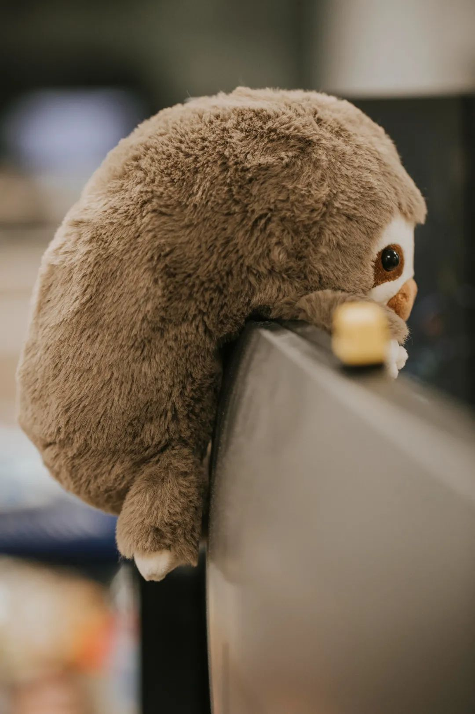
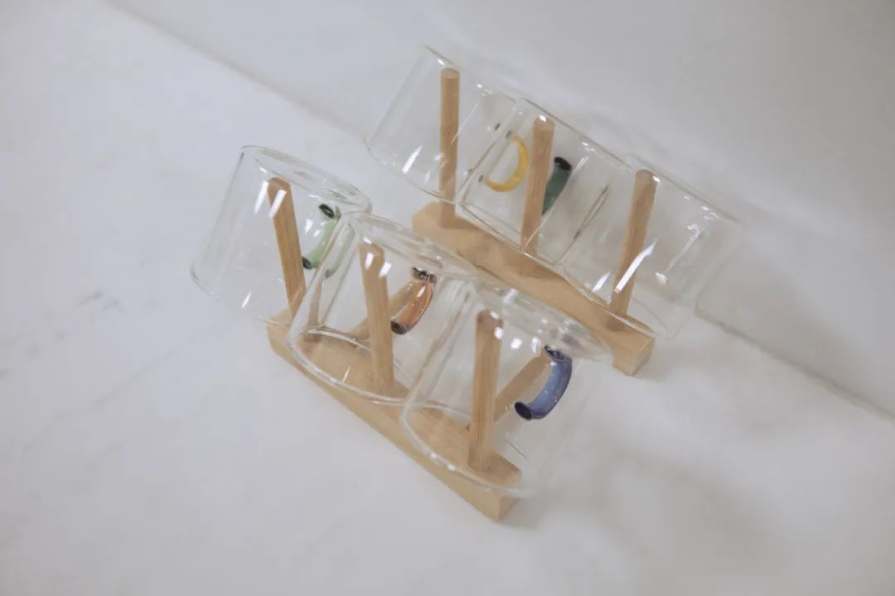
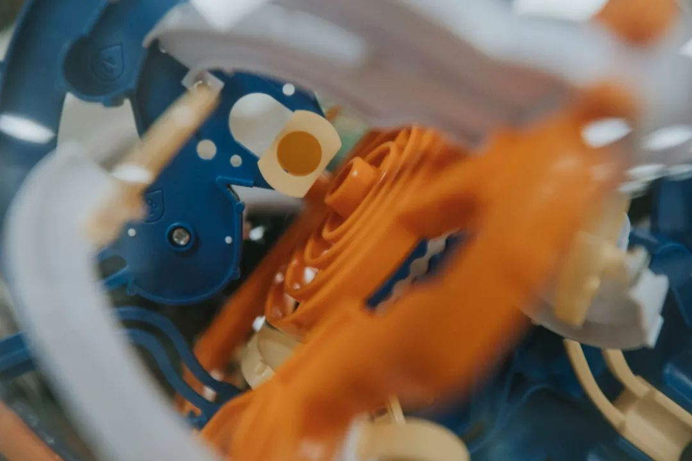

这个标题就没有去细究的必要了。字面意思：到桌子面前来写推文。跟子亥起玄武没有关系，跟九秘也没有关系。字词只是指代。当一个个割裂的语素重新组织，离散的变连续。这才是为什么帧率是重要的衡量指标。写完这一篇我就回去睡觉了。之前两次的推文是坐在烧水的壶边或者直接是躺在床上写的。今天还不一样。今天要等充电器充好电。好朋友家有了一个新宝宝降生。这也是我第一次见到这么小的宝宝，完整地从取名开始、到看到身长从五十公分出头到不到一个月就快六十公分。我说我看这么小的宝宝总是不敢太靠近。我和人合适的距离就是相机镜头、焦平面、到取景器后的距离。把相机收了回来。因为马上要拿回相机来做件很重要的事，于是今天开始重新拾捡一些古老技能。看了下上次拿相机出去拍照，还是六月底在湘江大桥，和两个老朋友走来走去。走来走去就很好。不会和走不到一起的人走来走去，因为会崴脚。上周六走了三万步之后，脚踝开始不舒服。进入一个叙事当中，当我所有的话都从“上一次这样好像还是在xx时候”作为发语，那无异于，那片时空已经和现在的你划了一条分明的界限。好似一条界河，蜿蜒沱沱，画地为牢。这一周都没做什么事，准确说是从十天前开始到现在，人是在工作，但是都没有什么实际的进展。实际的进展指的是值得称道的东西，譬如原来做不到的做到了、原来做得差的更好了。这十天半个月都在活跃四处的关系。一片泥沼里，你本来想在这里种点荷花。我不清楚荷花的生长过程，所以就想当然耳地来描述。花除了能用来看，也能剥点莲蓬、莲子清如水。都想看到荷花，兼传羽杯；都想吃到莲子，青莲地心火。等花开，要把时间轴尽可能加速、要把养分加足。最近十天半个月做的事也都每天还是在塘边看了又看，有时候也听了奇怪的建议《据悉，给荷花唱歌可以促进生长。可以听海顿，但是不能听肖斯塔科维奇，谨记谨记！》妙手偶得，总能随手捻出，其实就是搓出来，好些个奇怪的比喻。当前人们看待世界的主观能动性，无外乎一种高度近视。时至今日，还是没有看到床头那本书据说最像我写东西的部分。用电脑写日记的好处是打字比在手机上快多了。可是思维没有那么快，所以被决速了。评价我现在的拍照水平就是：对焦准确、曝光正常、色温平衡，构图基本合理。也就是一张照片拍出来，树懒是树懒、杯子是杯子。红烧牛肉面让人看起来知道“这里有一碗面”，儿童智力迷宫让人看起来“这个结构似乎有些复杂”


摄影基本反映了我的思维和生活取向：平铺直叙，这里很热我感觉到和我的体温有些不合适。音乐人没有音乐，这是不可理喻的；摄影人放下了相机，这是令人感觉震惊的；打麻将的人在手上有二条和四条的时候，把三条打了出去，别人马上报120然后救了一个轻微脑梗。昨天有一名青年在厕所跌倒。昨天有一辆小汽车去餐厅里吃饭